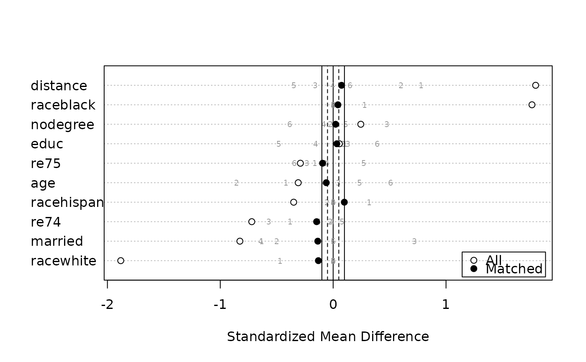
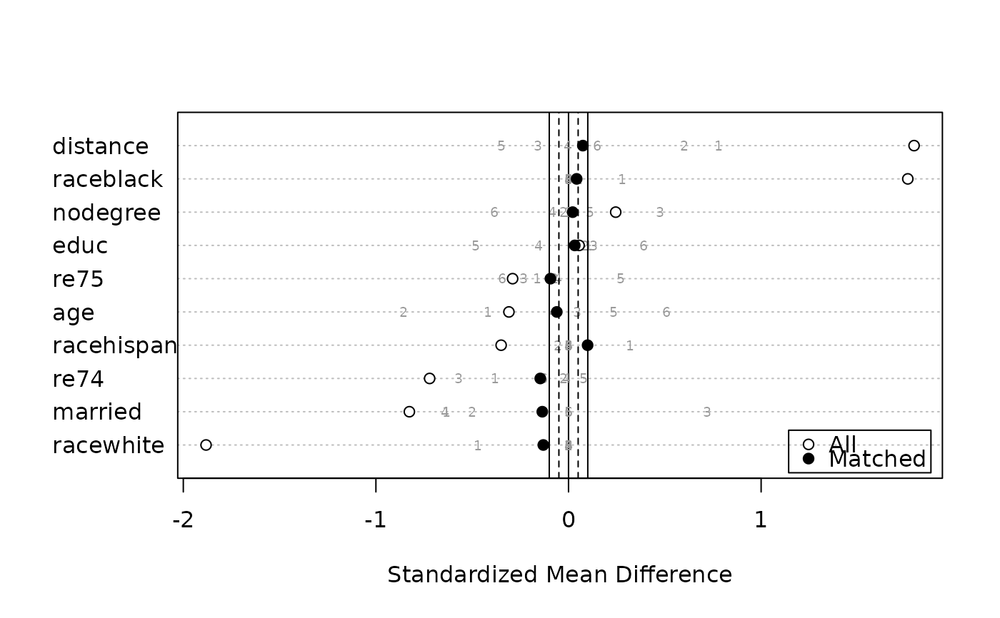

Generate a Love Plot of Standardized Mean Differences
Source:R/plot.summary.matchit.R
plot.summary.matchit.RdGenerates a Love plot, which is a dot plot with variable names on the y-axis
and standardized mean differences on the x-axis. Each point represents the
standardized mean difference of the corresponding covariate in the matched
or unmatched sample. Love plots are a simple way to display covariate
balance before and after matching. The plots are generated using
dotchart() and points().
Arguments
- x
a
summary.matchitobject; the output of a call tosummary.matchit(). Thestandardizeargument must be set toTRUE(which is the default) in the call tosummary.- abs
logical; whether the standardized mean differences should be displayed in absolute value (TRUE, default) or notFALSE.- var.order
how the variables should be ordered. Allowable options include
"data", ordering the variables as they appear in thesummaryoutput;"unmatched", ordered the variables based on their standardized mean differences before matching;"matched", ordered the variables based on their standardized mean differences after matching; and"alphabetical", ordering the variables alphabetically. Default is"data". Abbreviations allowed.- threshold
numeric values at which to place vertical lines indicating a balance threshold. These can make it easier to see for which variables balance has been achieved given a threshold. Multiple values can be supplied to add multiple lines. When
abs = FALSE, the lines will be displayed on both sides of zero. The lines are drawn withablinewith the linetype (lty) argument corresponding to the order of the entered variables (see options atpar()). The default isc(.1, .05)for a solid line (lty = 1) at .1 and a dashed line (lty = 2) at .05, indicating acceptable and good balance, respectively. Enter a value asNAto skip that value oflty(e.g.,c(NA, .05)to have only a dashed vertical line at .05).- position
the position of the legend. Should be one of the allowed keyword options supplied to
xinlegend()(e.g.,"right","bottomright", etc.). Default is"bottomright". Set toNULLfor no legend to be included. Note that the legend will cover up points if you are not careful; settingvar.orderappropriately can help in avoiding this.- ...
ignored.
Value
A plot is displayed, and x is invisibly returned.
Details
For matching methods other than subclassification,
plot.summary.matchit uses x$sum.all[,"Std. Mean Diff."] and
x$sum.matched[,"Std. Mean Diff."] as the x-axis values. For
subclassification, in addition to points for the unadjusted and aggregate
subclass balance, numerals representing balance in individual subclasses are
plotted if subclass = TRUE in the call to summary. Aggregate
subclass standardized mean differences are taken from
x$sum.across[,"Std. Mean Diff."] and the subclass-specific mean
differences are taken from x$sum.subclass.
See also
cobalt::love.plot() is a more flexible and sophisticated function to make
Love plots and is also natively compatible with matchit objects.
Examples
data("lalonde")
m.out <- matchit(treat ~ age + educ + married +
race + re74, data = lalonde,
method = "nearest")
plot(summary(m.out, interactions = TRUE),
var.order = "unmatched")
 s.out <- matchit(treat ~ age + educ + married +
race + nodegree + re74 + re75,
data = lalonde, method = "subclass")
plot(summary(s.out, subclass = TRUE),
var.order = "unmatched", abs = FALSE)

s.out <- matchit(treat ~ age + educ + married +
race + nodegree + re74 + re75,
data = lalonde, method = "subclass")
plot(summary(s.out, subclass = TRUE),
var.order = "unmatched", abs = FALSE)
